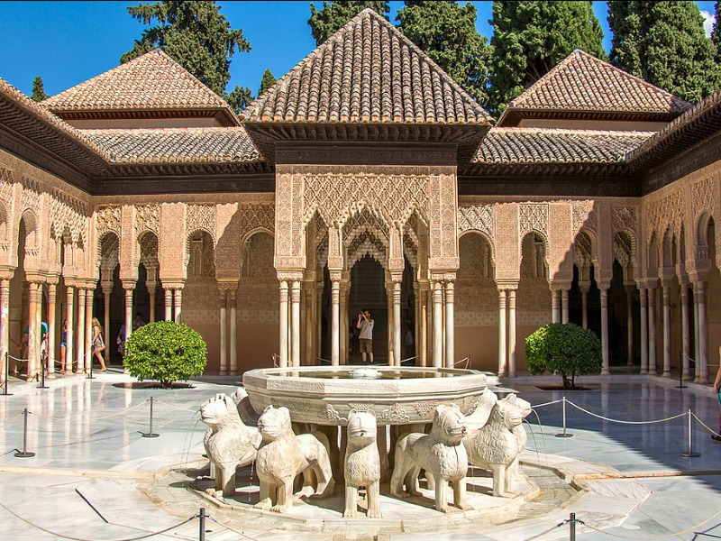
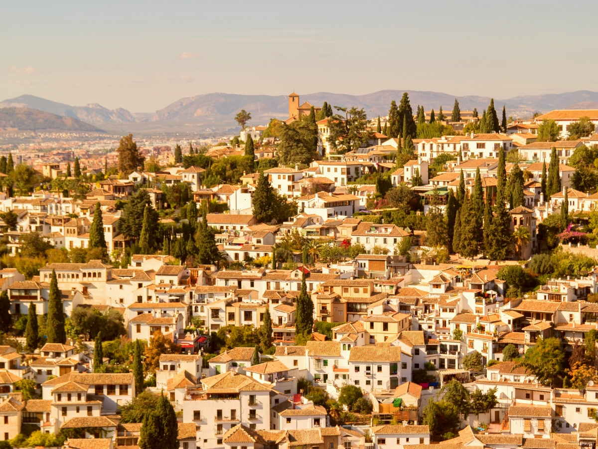
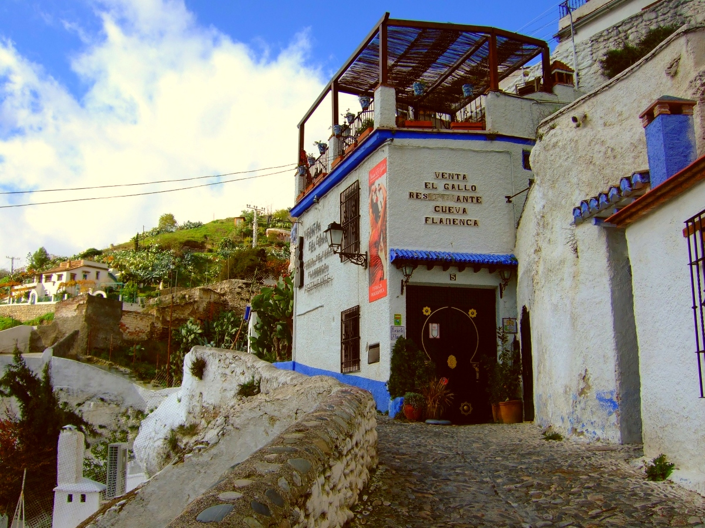
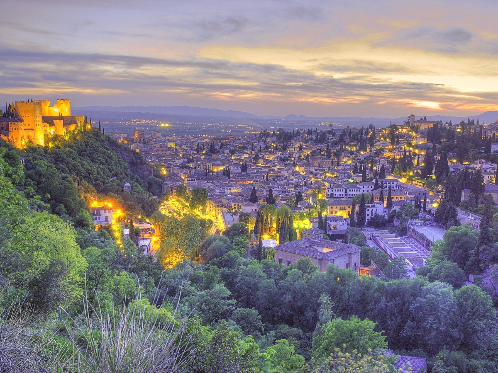
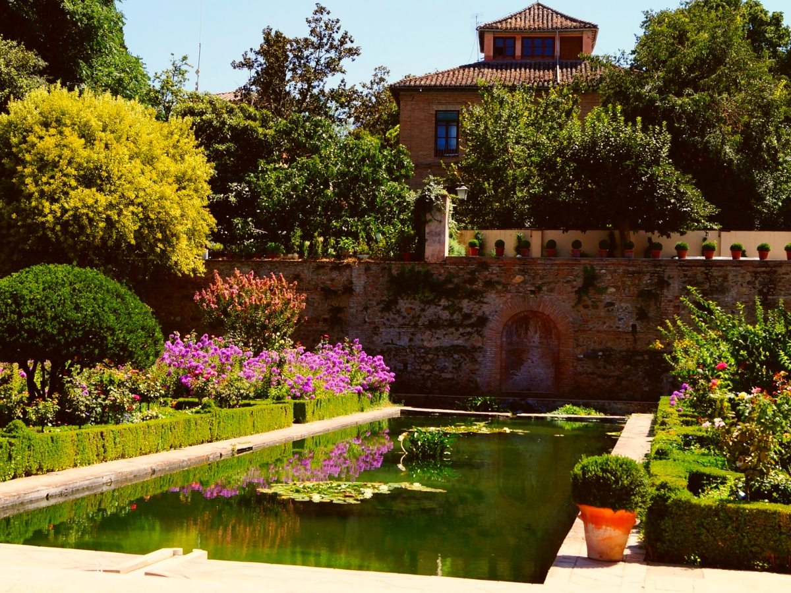

At the foot of the Sierra Nevada mountains lies Granada, a city with history and spectacular architecture in abundance.
Once the capital of Moorish Spain, this city combines culture, art and architecture from Europe and North Africa, creating one of Spain´s most interesting and unique cities. There´s plenty to see, so we have listed our favorite things in Granada for you.
Granada sits about two and a half hours by road from Seville, which makes it comfortable as a private day trip, and worth two or three nights if you want the Albaicín in the evening as well as the Alhambra in the morning.
In short
- —The Alhambra is the one thing to book ahead — tickets sell out weeks in advance, especially for the Nasrid Palaces.
- —Granada is one of the last cities in Spain where a free tapa still comes with every drink.
- —The Albaicín and the Alhambra together are a UNESCO World Heritage site.
- —From Seville it is roughly 250 km — a long but very doable day, or an easy overnight.
01
Alhambra
Rising above the modern city of Granada, is one of Andalusia´s most impressive monuments: Alhambra. It was built in 1238 by order of Muhammad I Ibn al-Ahmar but took more than a hundred years to be completed. Alhambra means ´red castle´ The Alhambra functioned as a fortress, a palace and a small medina (city) at the same time. Originally built only for military purposes, it has high walls and a strategic location overlooking the city and surrounding areas. All of its spectacular views, palaces, gardens and art pieces make Alhambra a must-see while in Andalusia.
Entry is timed, and the slot printed on your ticket applies to the Nasrid Palaces specifically. Arrive early, allow three hours for the whole complex, and bring water in summer — there is very little shade on the walk up.
Practically, the Alhambra is the one thing that has to be arranged before anything else. The complex caps visitors at roughly six thousand a day, tickets go on sale about three months ahead on the official site, and the time printed on your ticket applies to the Nasrid Palaces specifically. Arrive late and there is no second entry. Tickets are also name-bound: bring the passport or ID you booked with, because it is checked at the palace door.

02
Generalife Gardens
The Generalife sits on the slopes of Cerro del Sol (Hill of the Sun) overlooking the entire city of Granada. The palace was used as a quiet resort for the kings of Granada that wanted to get away from the official affairs at the Alhambra. Even though the complexes are very close to one another, the Generalife feels like a world apart. Nowadays the palace still exudes the calm those kings must have felt while staying here. The architecture is less decorative than the nearby-located Alhambra, but stylish and beautiful nonetheless.
The water is the part most visitors walk past. The channel running down the Patio de la Acequia has carried meltwater from the Sierra Nevada since the thirteenth century, fed entirely by gravity — the engineers built enough fall into the system to pressurise the fountains without a single pump, and it still works.

03
Albaícin neighborhood
Albaícin is Granada´s oldest neighborhood. So not surprisingly, the barrio is completely packed with culture history. The neighborhood was rewarded with a UNESCO world heritage site status for its well-preserved Hispano-Muslim architecture. Have a walk around the neighborhood and be amazed by the old architecture and beautiful viewpoints you can find.
What makes the quarter unlike any other old town are the cármenes: houses built around a private walled garden, with a terrace and usually a view of the Alhambra. The name comes from the Arabic karm, vineyard. From the street you see nothing but a wall and a door, which was the point. A few can be visited — the gardens at Carmen de los Mártires are free, Carmen de la Victoria belongs to the university, and Casa del Chapiz has two of them.

04
Granada Cathedral
The cathedral of Granada was the very first Renaissance cathedral in Spain, and the country’s second largest cathedral. The cathedral is located in the centre of the Muslim area and dates back to 1523. Granada was the last territory under Muslim rule. When the Christians took Granada from the Muslims, they built this impressive cathedral on top of a mosque to show their victory to the world. From the walls to the ceilings everything is decorated to demonstrate the power of the Church.
Next door is the Capilla Real, where Isabella and Ferdinand are buried — the monarchs who completed the reconquest and funded Columbus in the same year. They chose Granada over Madrid for their tomb, which tells you which conquest they were proudest of.

05
Tapas
A trip to Granada wouldn’t be complete without some delicious tapas. This can not be too hard, as you can get tapas on every street corner in Granada. Especially in the neighborhood of Realejo where you can find Calle Navas, or better known as Calle de Tapas. This street is home to about 30 tapas bars. Granada is one of the only cities left in Spain that still serves tapas for free with each drink purchased. Some typical tapas in Granada are remojón (cod, orange and olives) and la bomba (baked potato stuffed with spicy minced meat)
What to order: habas con jamón, broad beans with ham; piononos, a small sweet cake from nearby Santa Fe; and remojón, the orange, salt cod and olive salad that tastes like nothing else in Spain. As a rule, the further you walk from the Alhambra, the better the tapa gets.

06
Sacromonte neighborhood
The Sacromonte neighborhood is known as the gypsy quarter of Granada. Flamenco is very much alive on the hills of this neighborhood, it’s even the birthplace of Zambra, a specific type of flamenco with more arabic influences and where the singer also dances. Every day there are dramatic flamenco shows to watch in typical Sacromonte cave houses. There’s also a cave museum where you can learn more about the people that have inhabited Sacromonte since the 15th century.

07
Miradores de Granada
In order to really experience a city, you have to see it from every angle. Granada is blessed with some incredible viewpoints that allow you to see the city from above. The view from the Mirador de San Nicolás, with the Alhambra in the background, is found on hundreds of postcards. Other viewpoints give you spectacular panoramas of the city´s domes and towers, snowy peaks of the Sierra Nevada and the old city walls.
Go about half an hour before sunset, when the light turns and the palace goes gold. The climb up through the Albaicín is steep on slippery cobbles; buses C31 and C32 run up from the centre if you would rather not walk it.

08
Carmen de los Mártires
Carmen de los Mártires is a 19th century palace with a set of vast, romantic gardens. The English, Spanish and French Baroque gardens are all decorated with ponds, statues, fountains and of course many plants and trees. To the delight of the locals and tourists, the entry to the gardens is free! The gardens can also be used for wedding receptions, celebrations and other events.

Getting there, and getting in
Granada sits around 250 km from Seville — roughly two and three-quarter hours each way by direct coach, or about three hours by road on the A-92. Trains route via Antequera and take longer. Parking in the centre is genuinely difficult, so a car means a garage and a walk. Done as a day trip, the whole thing runs twelve to thirteen hours door to door.
The Alhambra ticket is the part that decides whether the day works. Book from the official site well ahead, check that the ticket says Palacios Nazaríes with its own time slot — plenty of resellers charge far more for tickets that cover only the gardens and the fortress — and carry the ID you booked with.
If you would rather have the day to yourself, we also arrange Granada privately from Seville: your own driver, tickets secured in advance and a licensed local guide, shaped around how much walking you want. Everything we run is tailor-made, so a slower version with a long lunch is just as possible as seeing all eight.
Mistakes worth avoiding
- —Arriving late for the Nasrid Palaces. The time on the ticket is absolute — be there twenty minutes early.
- —Buying from the wrong site. Many resellers charge well over the price and some exclude the Nasrid Palaces entirely.
- —Assuming one day covers everything. The Alhambra alone is half a day; add the Albaicín and the centre and you are choosing.
- —Walking up to San Nicolás at midday, when the sun sits behind the Alhambra and every photo is backlit.
- —Forgetting your passport. The ticket is name-bound and ID is checked at the palace entrance.
- —Underestimating the hills. The Albaicín is steep and the cobbles are polished — soft-soled shoes, not sandals.
Frequently asked questions
{{ f.q }}+
{{ f.a }}

Written by
Gunvor Guttormsen
Licensed tour guide · Seville
Gunvor is an officially licensed guide based in Seville and the founder of Flavors of Andalucia. She guides in English and Norwegian, and also in Swedish and Danish, and has spent years walking the markets, bodegas and back streets she writes about here.
More about Gunvor